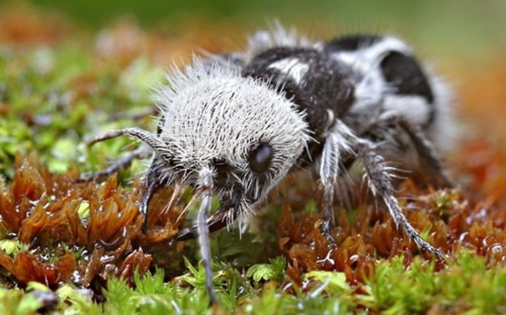

𝕀ℕ𝔽𝕆ℝ𝕄𝔸ℂ̧𝕆̃𝔼𝕊 𝔾𝔼ℝ𝔸𝕀𝕊
・A FORMIGA PANDA É UM PARASITOIDE:
Para abordar esse ponto, é apropriado conhecer o ciclo de vida da formiga-panda. Durante o
voo, os machos identificam as fêmeas e as erguem no ar para acasalar. Pós o acasalamento, a fêmea deposita seus ovos em cada pupa no ninho de outros insetos, como
abelhas ou vespas. Ao eclodir, as larvas se alimentam dos seus hospedeiros. Cada fêmea pode colocar até 2000 ovos em
seu ciclo de vida de dois anos.
Assim, essa espécie, como outros parasitoides, produz uma larva que se alimenta das larvas
do hospedeiro. Essa dinâmica se baseia em uma luta contínua e complicada entre produtores e exploradores de
recursos, que dependem desses mesmos recursos para sua sobrevivência.

As formigas-panda adultas são solitárias, o que significa que não formam colônias de nenhum tipo. As fêmeas se
alimentam principalmente de néctar, mas ocasionalmente atacam formigas, lagartas ou pupas/larvas. Os machos se
alimentam principalmente de néctar.
・ADAPTAÇÕES DA FORMIGA PANDA:
A formiga-panda possui várias adaptações que lhe permitem explorar outros insetos agressivos e torná-los seus
hospedeiros. Em primeiro lugar, seu poderoso exoesqueleto é a primeira proteção durante a invasão de insetos
hospedeiros.
Além disso, a natureza garante que apenas os mais fortes se reproduzam, pois ao copular durante o voo, os machos
maiores são selecionados.Por outro lado, a ausência de asas na fêmea permite que ela explore o futuro lar dos seus
ovos na terra. Essa busca
prolongada expõe a fêmea, mas ela está preparada.
Para cumprir sua missão, a formiga-panda usa seu notável repertório defensivo, que inclui uma forte ferroada, gritos
de alerta, coloração dissuasiva, rastro químico e uma variedade de táticas evasivas.
➥ Início
➥ Características
➥ Estridulação